Genuine VW Touareg 7P 20" Wheels + 275/45R20 Tyres — Set of Four
20 × 9 ET57 · 5×130 · one factory set off a single car
A$980 Complete set — four wheels with four tyres
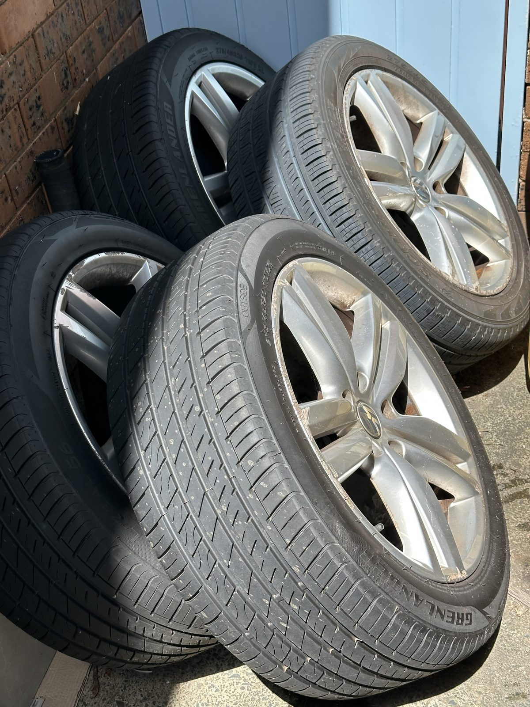
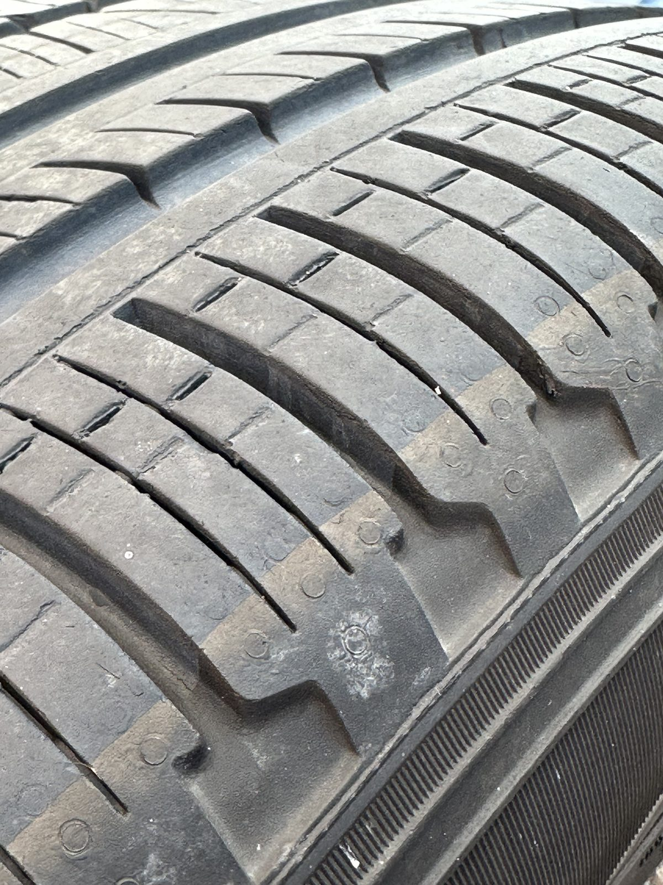
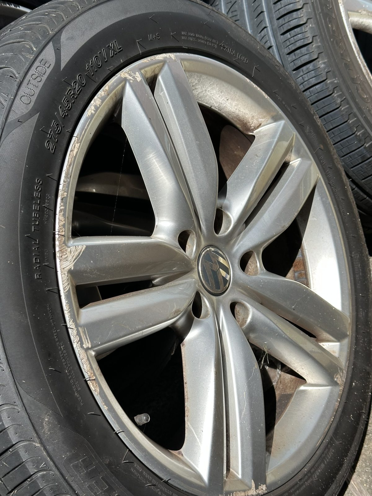
One genuine factory set, all four wheels off the same Touareg 7P — not a set pieced together from different cars. Silver multi-spoke with VW centre caps, 9J wide, ET57, 5×130 PCD. Straight and true: no buckles, no flat spots, no cracks, never repaired. There is kerb rash on the outer lips — paint rubbed off the rim edge, cosmetic rather than structural, and the photos show it clearly rather than hiding it.
Tyres are 275/45R20, M+S, asymmetric. Three are Grenlander and one is a Scorpion — that is how the set came off the car, and the odd one out is actually the better tyre of the four. Tread is close to new: the mould hairs are still standing on the shoulders, the block edges are still square, the fine sipes are still open, and the vent marks on the tread face are still proud.
- Fitment
- 20 × 9J · ET57 · 5×130 PCD · VW centre bore
- Tyres
- 275/45R20 · M+S · asymmetric (OUTER face out) · 110V XL and 110Y
- Condition
- Used — kerb rash on outer lips, structurally sound
- Weight
- Approx. 120 kg for the set — bring a ute or trailer
5×130 also appears on some Audi Q7 and Porsche Cayenne fitments, but confirm PCD and offset against your own car before committing.
eBay — link coming
Gumtree — link coming
Facebook — link coming
Magnetic Latching Relay 120A 12V — Bistable, Holds With Zero Coil Power
120A 250VAC · copper busbar M6 terminals · 43 × 33 × 22mm · 30 in stock
A$25 Bulk pricing available on ten or more
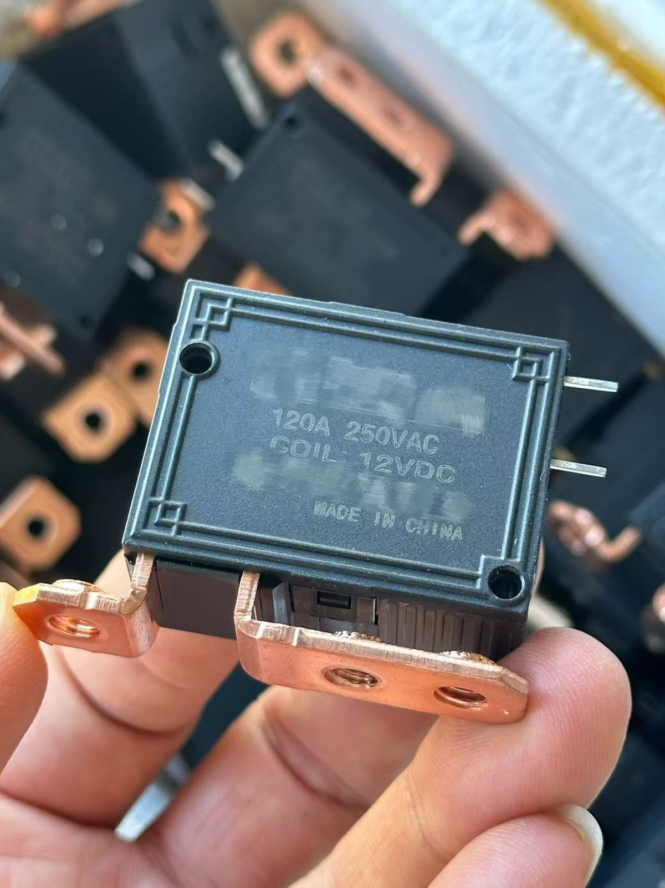
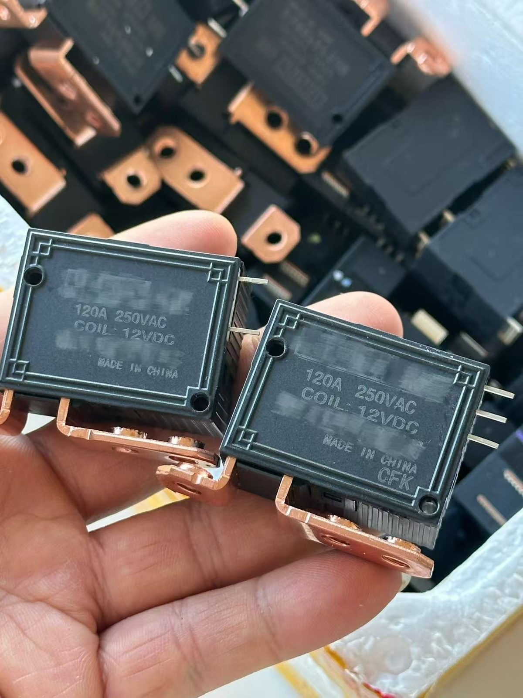
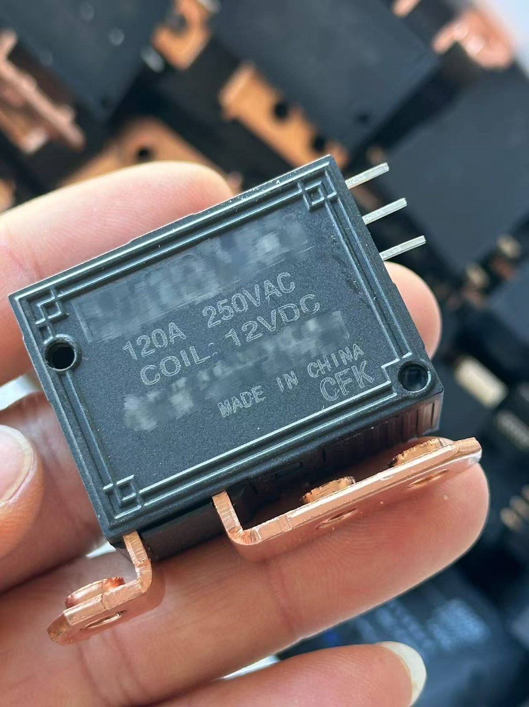
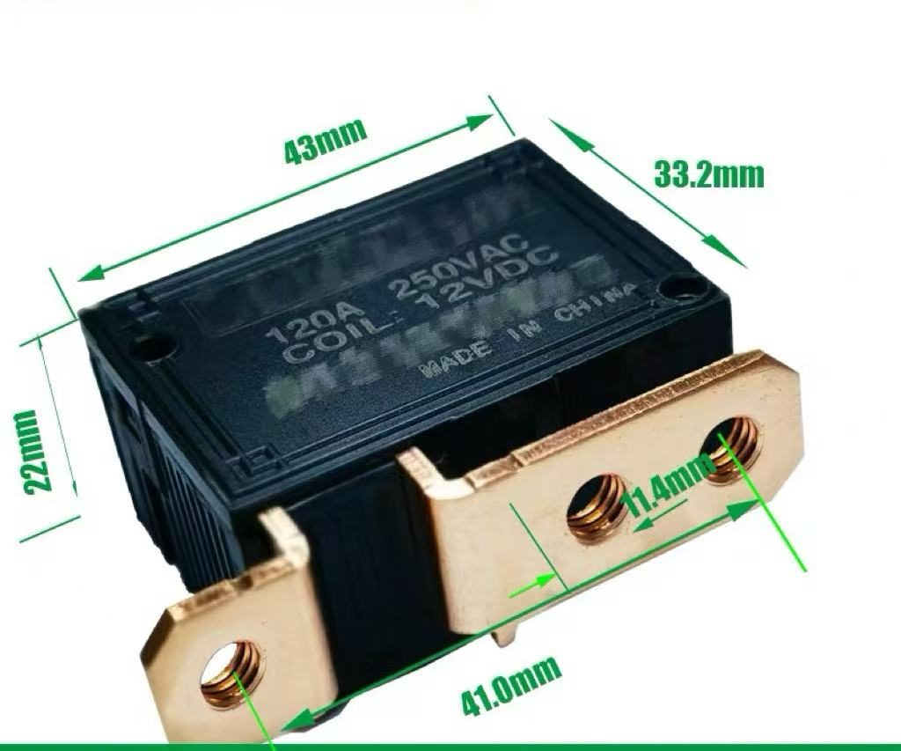
A real latching relay: it closes on a pulse, opens on a pulse, and then holds that state with the coil completely dead. That is the whole point. An ordinary relay has to keep its coil energised to stay closed — around 2 to 5 watts, running the whole time, which over a month pulls roughly 150Ah out of a 12V battery. Use an ordinary relay to stop something draining your battery and the relay itself becomes the drain. This one draws nothing to hold.
Built for 4WD dual-battery setups and boats. Cut the link to the start battery when you park up, so the fridge, dash cam, UHF and chargers cannot flatten it — and the isolator adds no drain of its own. On a boat it holds through a mooring without drawing current, and the contacts are held by a permanent magnet rather than spring tension, so engine vibration does not make them chatter.
- Contact rating
- 120A 250VAC
- Coil
- 12VDC · latching (bistable) · thin pin leads
- Main terminals
- Two copper busbars with M6 threaded holes, 11.4mm pitch
- Size
- 43 × 33.2 × 22mm · terminal spacing 41mm
- Condition
- New, bulk stock
Straight up: a generic Chinese-made unit — no IEC, UL, CE or RCM certification marking on the case, and no stated contact material. Not recommended for a starter motor circuit. It comes in single-coil and double-coil versions and the wiring is different, so message before you wire it.
eBay — link coming
Gumtree — link coming
Facebook — link coming
Stainless Clamp-On Rod Holder — Fits 22–32mm Rail, No Drilling
234mm tube · 51mm outside diameter · toothed angle adjuster · 6 in stock
A$35 Discounts on three or six
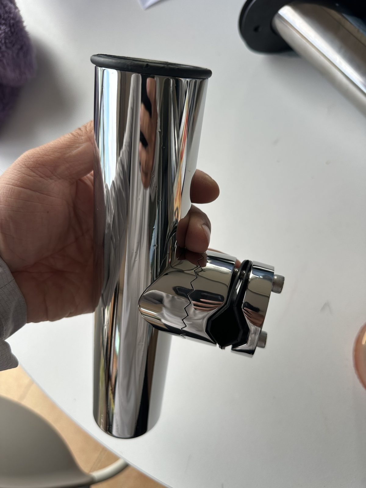
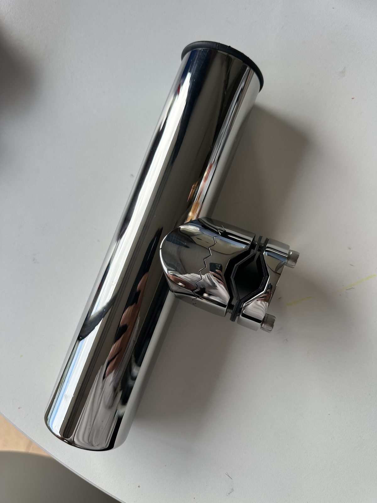
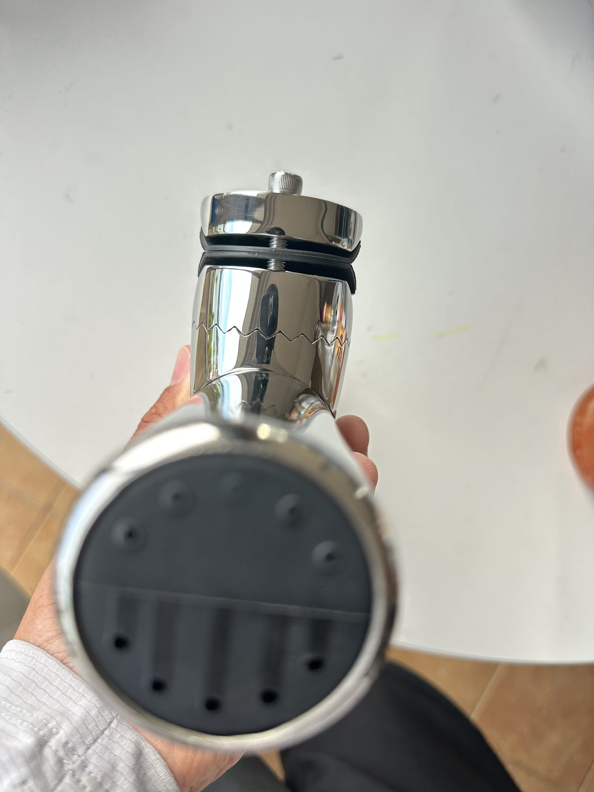
Clamps straight onto your boat's rail — no holes, nothing to seal, nothing to leak. Fits rails from 22mm to 32mm, which covers most trailer boats and yacht pushpits. The tube is 234mm long and 51mm outside diameter, polished stainless, with a black PVC liner that protects the rod and stays put, plus a drain hole at the base so water does not pool.
Angle is set on a toothed collar: loosen the two M6 knurled bolts, swing it where you want it, lock it. The teeth hold the position instead of relying on a friction washer, so it will not creep once a rod loads up. Rubber pads sit inside the clamp so the rail is not marked. On and off in seconds, which makes it useful if you move it around or only fish a couple of times a year.
- Rail fit
- 22–32mm diameter, clamp-on, no drilling
- Tube
- 234mm long · 51mm outside diameter · polished stainless
- Clamp
- 52.5mm wide · 39.5mm hole centres · 2 × M6 knurled bolts
- Condition
- New
No brand mark and no material stamp on the unit, so it is listed as stainless steel rather than claimed as 316.
eBay — link coming
Gumtree — link coming
Facebook — link coming
21700 Lithium Cells 4500mAh — 3.7V 16.65Wh, Bulk
ND Norda 21700-4500 · 3C discharge · 50 cells available
A$6 each Bulk pricing on ten or more
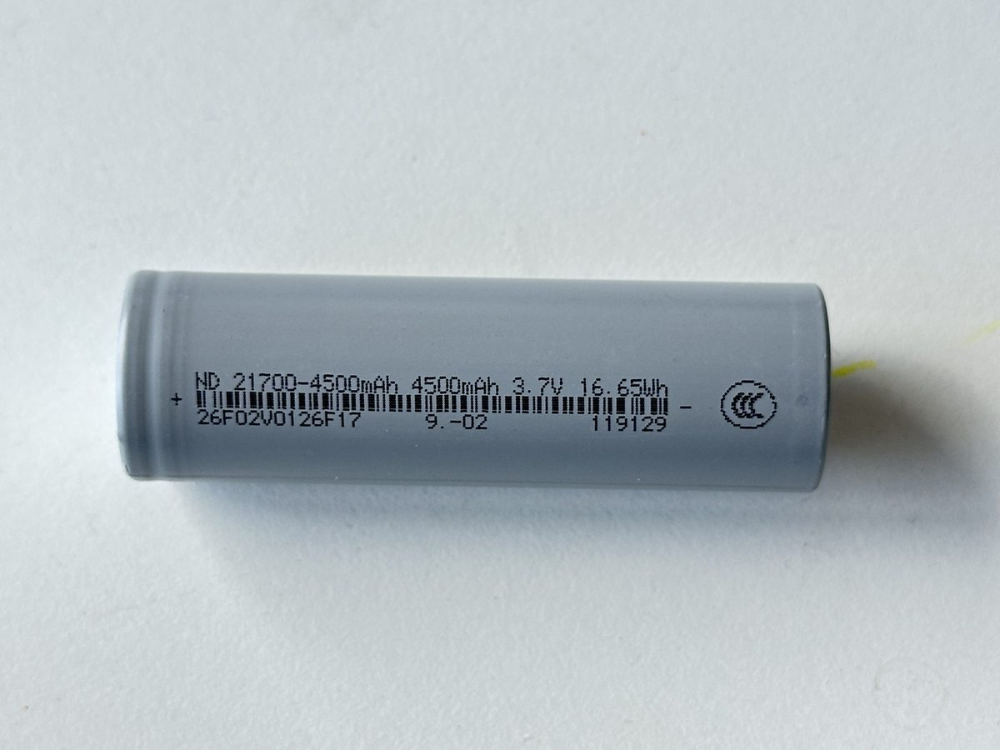
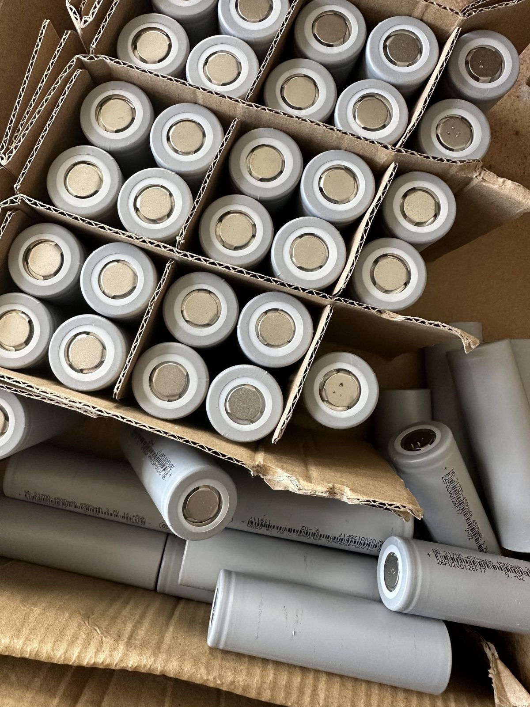
New 21700 lithium-ion cells, 4500mAh, 3.7V, 16.65Wh, 3C continuous discharge with a 4C peak. Nominal 4.2V charge, 2.75V cut-off, internal resistance around 21 milliohms, rated for 800-plus cycles. Dimensions are 21.7mm by 70.5mm, about 68 to 70 grams each. Supplied loose from bulk cartons — batch codes are printed on every cell and can be checked by eye.
Used for building battery packs: power banks, portable power stations, e-bike and scooter packs, cordless tools, lighting. They carry Chinese CCC marking, which is a Chinese domestic certification and is not recognised in Australia — so they are sold as cells, not as a certified product.
- Capacity
- 4500mAh · 3.7V · 16.65Wh
- Discharge
- 3C continuous · 4C peak
- Size / weight
- 21.7 × 70.5mm · approx. 68–70g
- Condition
- New, bulk (no retail packaging)
Lithium cells — pickup only, no postage. Please bring your own tester if you want to check a few before paying.
eBay — link coming
Gumtree — link coming
Facebook — link coming
21700 Lithium Cells 4000mAh — 3.7V 14.8Wh, Bulk
ND Norda 21700-4000 · orange sleeve · 100 cells available
A$6 each Bulk pricing on twenty or more
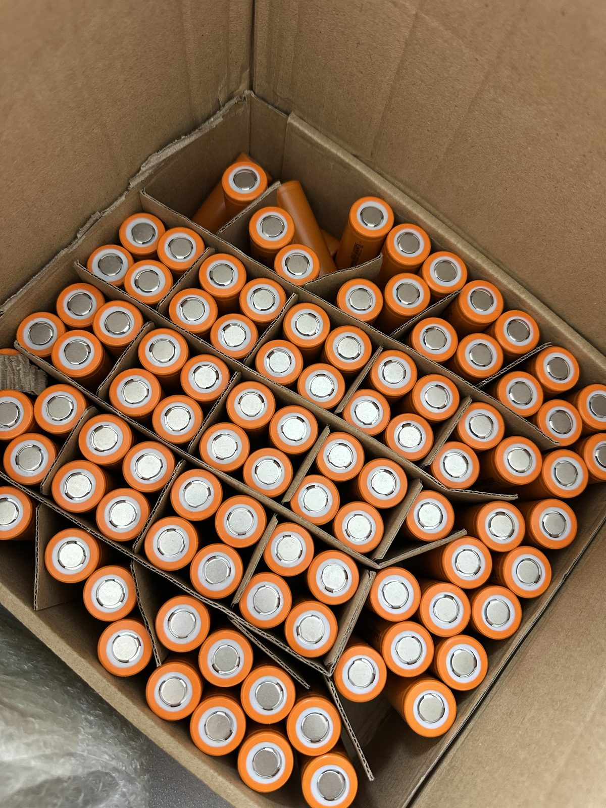
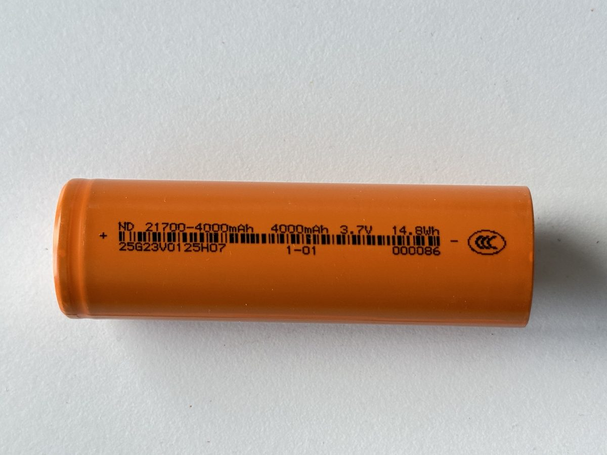
New 21700 lithium-ion cells, 4000mAh, 3.7V, 14.8Wh, rated 5C. Same physical size as the 4500 cells above but a different capacity and sleeve colour — 4000mAh cells are orange, the 4500s are light grey, so they are easy to tell apart when picking. Batch code is printed on the wrap along with the rating, so you can verify what you are getting before you commit.
These are the cells people buy for DIY packs: e-bike and scooter batteries, power banks, portable power stations, cordless tool re-cells, torches and other high-drain gear. One hundred available, loose from bulk cartons, so you can buy a handful to test or take a full box.
- Capacity
- 4000mAh · 3.7V · 14.8Wh
- Discharge
- 5C rated
- Size
- 21700 format, 21.7 × 70.5mm nominal
- Condition
- New, bulk (no retail packaging)
Lithium cells — pickup only, no postage. Chinese CCC marking only; not an Australian-certified product.
Wander Oz 316 Marine BBQ Grill — Australian Gas Certified
Model MENCA060 · LPG 13.5 MJ/h · certificate GMK10674
A$450 Matching Wander Oz 316 rack available separately
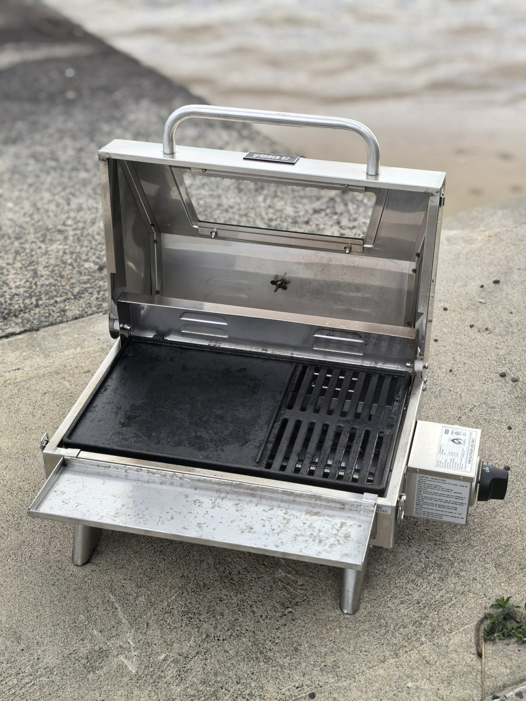
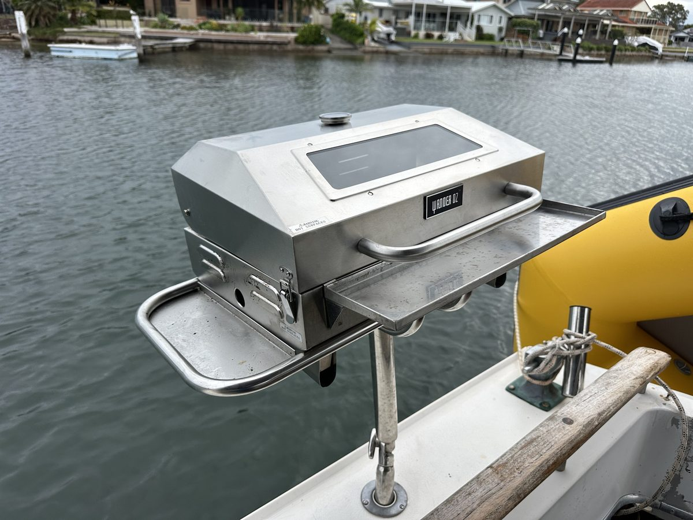
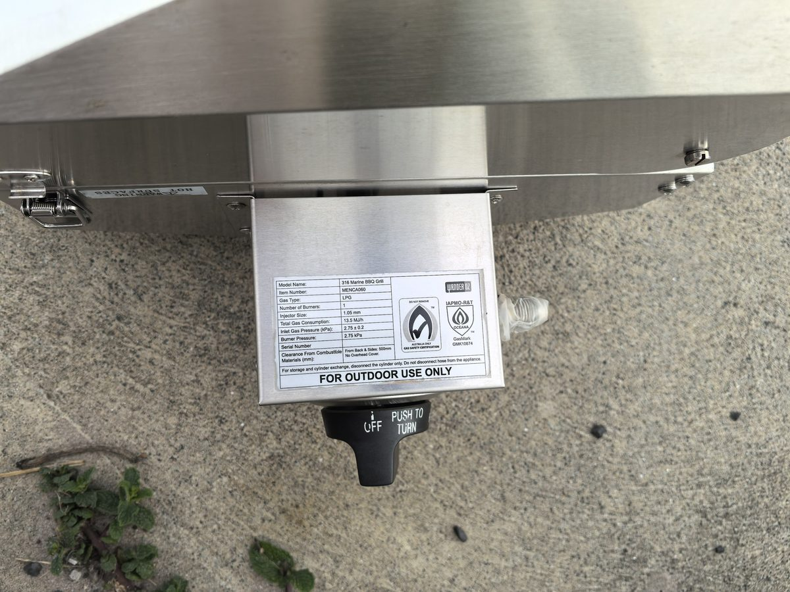
Genuine Wander Oz 316 marine grade stainless BBQ — 316, not 304, so it will not pit from salt spray. Australian gas certified under IAPMO-R&T / Oceana GasMark, certificate GMK10674, tested and approved for Australia only, which matters at inspection and with your insurer. Hinged hood with both a window and a built-in thermometer so you can watch the cook with the lid down, plus Flame Guard ignition safety that shuts the gas off if the flame blows out in a sea breeze.
Cast iron plate and grill section, stainless drip tray and front utensil tray, piezo ignition, folding legs for table or transom use, and the rail mount base already fitted. Used but well looked after — the cast iron is seasoned and ready to cook on, and the photos are honest about the marks. Needs 500mm clearance at the back and sides, and must not be used under an overhead cover.
- Model
- Wander Oz 316 Marine BBQ Grill · MENCA060
- Gas
- LPG · 13.5 MJ/h · burner pressure 2.75 kPa · injector 1.05mm
- Certification
- IAPMO-R&T / Oceana GasMark GMK10674 · Australia only
- Condition
- Used — cast iron seasoned, body clean
The matching Wander Oz 316 stainless holder rack (MENCA008) is also here and fits only this grill. Ask if you want both.
LuxeLiving Bath LBi3 Smart Toilet — WaterMark + SAA, Brand New in Box
Model 368GE · floor mounted S-trap · 684 × 394mm
A$890 Brand new, unopened box
Photos of the actual boxed unit are on the Facebook listing — tap through below.
Brand new in the box, never installed. WaterMark certified (AS 1172.1 and AS 1172.2) and SAA approved to AS/NZS 60335, which means a licensed plumber can legally install it — the certificates can be shown on request. That is the part most cheap listings cannot do, and it is why this one is priced where it is.
Top of the LBi3 range: the lid opens on its own as you walk up, warm water washing with four temperature settings, warm air drying, heated seat, foot-operated flush, remote control included, and it still flushes during a blackout on a 9V battery. Instant heating rather than a tank, 1300W, IPX4 rated. Floor mounted S-trap, 684mm long, fits set-outs from 90mm to 220mm.
- Model
- LuxeLiving Bath LBi3 · 368GE · floor mounted S-trap
- Certification
- WaterMark (AS 1172.1 / 1172.2) · SAA / RCM (AS/NZS 60335)
- Dimensions
- 684 × 394mm · set-out 90–220mm
- Condition
- New in box, never installed
Needs a licensed plumber to install, a power point near the toilet, and a separate RPZD backflow valve which is not supplied — ask your plumber for a price before you buy.